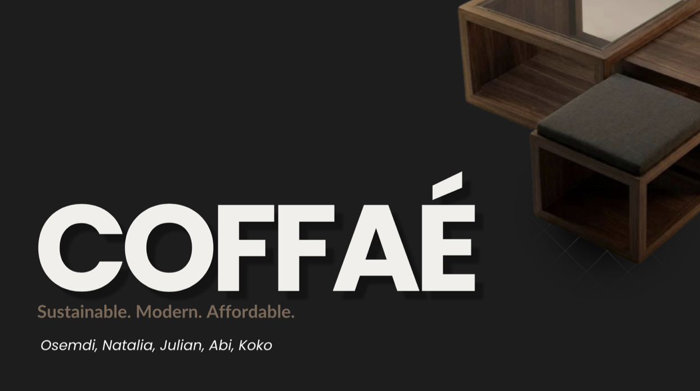

Web Design
COFFAE Web Design

Sustainable, Modern, and Affordable Coffee Table
For this work, my peers and I were tasked to create a web page for a new product, a coffee table. Our challenge was to encapsulate the coffee table's story; a beautiful, affordable and versatile table for the young adult. In order to do so we decided the site needed to feel young and calm, a safe and reliable space to emphasize what the table stood for. Every decision behind the web design, from the colors, aesthetics, logo to feel of the site were processes backed by target user research, competitive analysis, and market research.